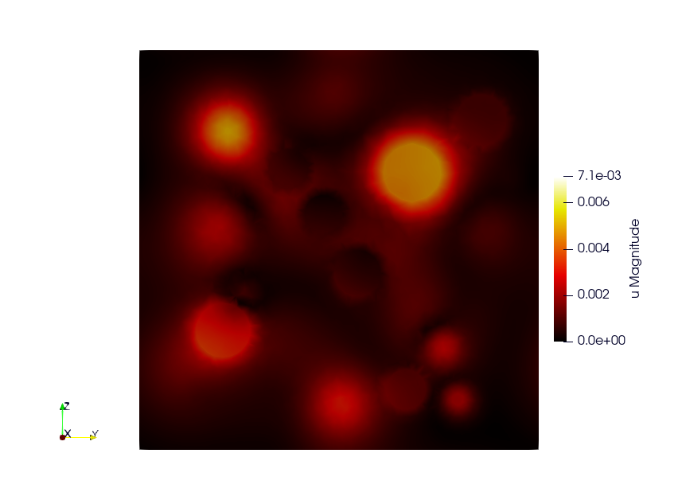
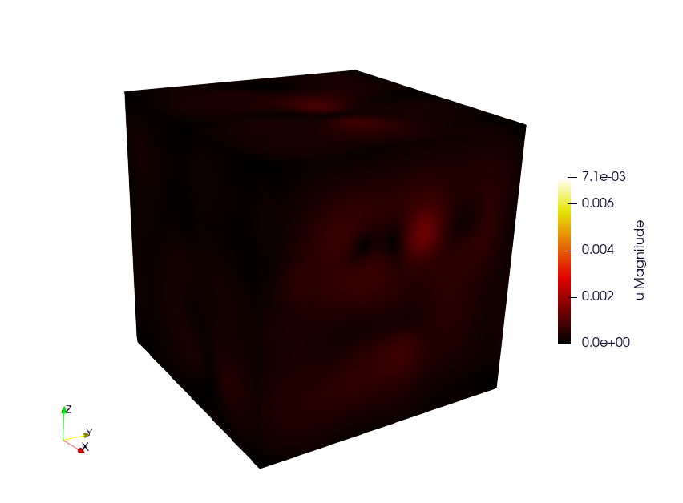

Representative Volume Element with Elastic inclusions
Simulation of a Representative Volume Element (RVE) with a non-linear elastic behavior law. A geometry mesh is provided : “inclusions_49.geo”. The mesh can be generated using the following command: gmsh -3 inclusions_49.geo. By modifying the parameters within the .geo file, such as the number of spheres and the size of the element mesh, you can control and customize the simulation accordingly. (code source: ex6)


Build the mesh
Use GMSH to mesh the geometry. The .geo file is in the ex6 repository. Command line:
# generate the .msh file with GMSH
gmsh -3 inclusions_49.geo
Run the Simulation
mpirun -n 12 ./rve --mesh inclusions_49.msh --verbosity-level 0
Available options
To customize the simulation, several options are available, as detailed below.
Command line |
Description |
|---|---|
–mesh or -m |
Specify the mesh “.msh” used (default = inclusion.msh) |
–refinement or -r |
Refinement level of the mesh (default = 0) |
–order or -o |
Finite element order (polynomial degree) (default = 2) |
–verbosity-level or -v |
Choose the verbosity level (default = 0) |
–post-processing or -p |
Run post processing step (default = 1) |